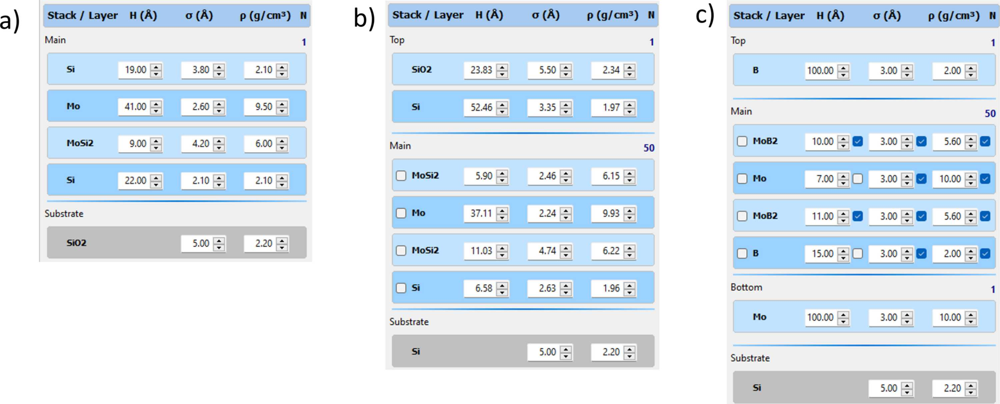
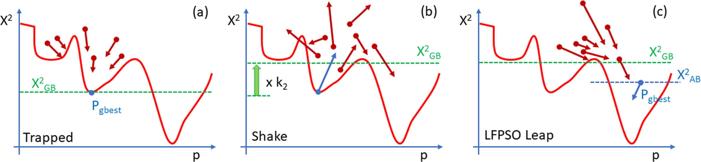
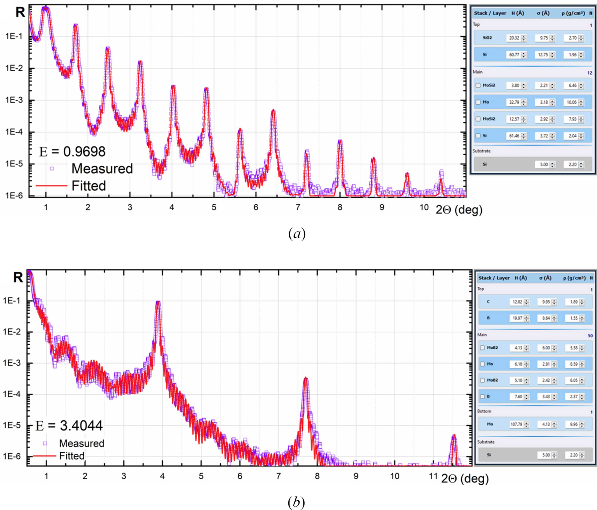

X-Ray Calc 3
Contents
- Introduction
- Quick Start
- Installation & First Launch
- Application Overview
- Quick Reference
- Projects
- Defining a Model
- Experimental Data
- Calculation
- Fitting (Optimization)
- Results & Export
- Charts & Visualization
- Profile Extensions
- Tools
- Application Settings
- Universal Mirror Optimizer v3.7
- MCP Server (XRC_MCP)
- File Formats
- Illustrative Examples
- Troubleshooting
- Source Code & Git
- Online Wiki
1Introduction
X-Ray Calc 3 (XRC3) is an open-source software package for simulating X-ray reflectivity (XRR) and solving the inverse problem of reconstructing film structures from measured XRR curves. It is designed for researchers working with X-ray optics, synchrotron radiation, and thin-film coatings.
The software employs Parratt’s exact recursive method based on the Fresnel equations to calculate XRR and incorporates specialized tools for modeling periodic multilayer structures (PMMs). Refractive indices of materials are computed using the Henke tables of atomic scattering factors (Henke et al., 1993). The computational algorithm has been validated against the IMD software (Windt, 1998), with accumulated variances consistently below 0.5%.
The application allows you to:
- Build multilayer structural models composed of stacks and individual layers
- Calculate theoretical X-ray reflectivity curves as a function of incidence angle (θ) or wavelength (λ)
- Load experimental reflectivity data and compare it with theoretical predictions
- Automatically fit model parameters to experimental data using the Shake LFPSO (Lévy Flight Particle Swarm Optimization) algorithm
- Visualize results through interactive charts with logarithmic/linear scaling
- Define parameter profiles (polynomial, exponential, tabulated) across periodic structures
- Manage materials via the built-in Henke atomic form factor database
See Also
2Quick Start
This section provides a hands-on introduction to X-Ray Calc 3. The distribution includes several demonstration projects in the Examples folder — open one to explore the interface before building your own models.
Exploring the Demo Projects
- Click Open and navigate to the Examples folder.
- Select a project file (
.xrcx). - Go to the Computation tab and click Run (or press F5). You can also use Calc All (F12) to calculate all models at once.
Navigating the Interface
- Double-click a model name in the Project Items list to open its Properties dialog (name, color, description). The same dialog is available from the right-click context menu.
- Double-click a layer to open the Layer Properties dialog, where you can change material, thickness, roughness, and density.
- Double-click a stack header to open the Stack Properties dialog, where you can rename the stack and change the number of periods.
- Use the Stack and Layer toolbar panels to add, insert, or delete structural elements.
Creating a Model from Scratch
- Create a new project (File > New Project).
- Select Model 1 in the project tree.
- Add a stack: Structure > Add Stack (or use the toolbar). In the dialog, set the stack name (e.g., “Main”) and the number of periods (default: 1 for non-periodic structures).
- Select the stack by clicking its title in the structure panel.
- Add layers: click Add Layer (or Structure > Add Layer). Fill in the material (click “...” to select from the Materials Database), thickness, roughness, and density. Repeat for each layer.
- Calculate the reflectivity: press F5 (or Calc > Calculate).
Calculation Settings
- Mode: Reflectivity can be calculated as a function of grazing angle or wavelength.
- Polarization: Use s-polarization for hard X-rays at low grazing angles (below 20°) — this is significantly faster. Use sp-polarization for larger angles or softer radiation.
- Number of points (N): Controls calculation precision. Calculation time scales linearly with N.
- Angle range: Set with θ1 and θ2. Check 2θ for θ-2θ geometry. dθ sets the instrumental beam divergence.
- Scale: Toggle between Linear and Log scale using the toolbar button. Set a background level if needed.
- Legend: Click items in the chart legend to toggle curve visibility.
Exporting Results
- The Export button on the Result panel saves the calculated curve to an ASCII file or copies it to the clipboard.
- The Save button on the Plot panel saves the chart as a bitmap image.
See Also
3Installation & First Launch
System Requirements
- Windows 10 or later (64-bit recommended)
- Minimum 4 GB RAM (8 GB recommended for large models)
- Multi-core CPU recommended for parallel computation
Data Storage
On first launch, X-Ray Calc 3 creates a working directory:
- Default location:
%APPDATA%\X-RayCalc3\ - Portable mode: If a file named
uselocaldataexists in the application folder, all data is stored locally next to the executable.
The working directory contains:
| File / Folder | Purpose |
|---|---|
xrc3.ini | Application settings |
Henke/ | Atomic form factor tables |
Backup/ | Auto-save and backup projects |
Output/ | Fitting results (when auto-save is enabled) |
Benchmark/ | Benchmark model files |
Jobs/ | Batch job definitions |
File Association
To associate .xrcx project files with X-Ray Calc 3, go to File > Settings > Paths and Files and click Register file associations (xrcx).
See Also
4Application Overview
Main Window Layout

The primary window comprises four key panels (see Figure 1). The first panel, Project Items (1), showcases the contents of the current project. A project can organize an unlimited number of theoretical models and experimental curves into well-structured folders. The Structure panel (2) functions as a visual depiction of the layered model and provides easy access to all parameters linked with the structural model. The right side contains XRR calculation parameters (3) and Fitting parameters (4) at the top, the main XRR curve plot (5) in the center, and Distributions / Convergence charts (6) at the bottom.
Left Column — Project Panel
- File Toolbar: New, Open, Reopen, Save, Print
- Project Toolbar: Add Model, Export, Copy,
 Paste,
Paste,  Edit Properties, Add Extension,
Edit Properties, Add Extension,  Copy Image, Print, Delete
Copy Image, Print, Delete - Project Tree: Hierarchical view of all models, data sets, and folders in the current project
- Description: Read-only text memo showing the description of the selected item
Middle Column — Structure Panel
- Structure Toolbar: Stack operations ( Add, Insert, Delete) and Layer operations ( Add, Insert,
 Copy,
Copy,  Cut, Paste, Delete)
Cut, Paste, Delete) - Increment Selector: Step size for quick parameter adjustment (10, 5, 1, 0.25, 0.1, 0.01)
- Set Fit Limits Button: Opens the parameter bounds editor for fitting
- Visual Structure Editor: Interactive graphical representation of the layer structure — shows Ambient, Stacks (with N repetitions), individual Layers (with H, σ, ρ values), and Substrate. Double-click elements to edit properties; click parameter values for in-place editing.
Right Column — Working Area
- Calculation Toolbar: Load Data, Paste Data, Calculate,
 Save Result, Copy Result,
Save Result, Copy Result,  Batch Execute, Auto Fit, Stop
Batch Execute, Auto Fit, Stop - Settings Panel: Calculation mode and parameters (left half) alongside Fitting mode and parameters (right half)
- Main Chart: Interactive reflectivity plot (θ or λ vs. reflectivity)
- Chart Info Bar: Cursor position, peak detection, area integration, χ² values
- Chart Pages: Tabbed sub-charts for parameter distributions (Thickness, Roughness, Density, Profile, Fitting Progress)
Status Bar
Displays calculation time, fitting time, application version, and platform (x64).
Menu Bar
| Menu | Purpose |
|---|---|
| File | Project management (New, Open, Save, Settings, Exit) |
| Project | Model operations (New Model, Duplicate, Copy, Paste, Add Folder) |
| Structure | Stack and layer editing (Add, Insert, Delete, Copy, Paste, Cut) |
| Data | Experimental data operations (Load, Paste, Normalize, Smooth, Trim, Export) |
| Calc | Calculation and fitting (Calculate, Calculate All, Auto Fitting, Batch Jobs, Benchmark) |
| Result | Export results (Save, Copy to Clipboard, Copy as BMP/WMF) |
| Tools | Material management (Create Material, Edit Henke Table) |
| Help | User Manual, About dialog |
See Also
5Quick Reference
Toolbar Quick Reference
| Button | Action |
|---|---|
| New | Create a new project |
| Open | Open an existing project |
| Save | Save the current project |
| Print the current chart | |
| Add Model | Add a new model to the project |
| Load Data | Load experimental data from file |
| Paste Data | Paste experimental data from clipboard |
| Calc Run | Calculate the selected model |
| Stop | Abort the current calculation or fitting |
| Fast Forward | Start auto-fitting |
| Resume Fitting | Continue fitting from the last result, holding frozen parameters — see Staged Fitting |
| Save calculation results to file | |
| Copy Result | Copy results to clipboard |
| Scale | Toggle linear/logarithmic chart scale |
| Delete | Remove the selected item |
Structure Toolbar
| Button | Action |
|---|---|
| Period + | Add a new stack |
| Period Insert | Insert a stack at the current position |
| Period − | Delete the selected stack |
| Layer + | Add a new layer |
| Layer Insert | Insert a layer at the current position |
| Copy the selected layer | |
| Cut the selected layer | |
| Layer Paste | Paste the copied layer |
| Layer − | Delete the selected layer |
| Set Fit Limits | Open the parameter bounds editor |
| Increment | Set the step size for parameter adjustments |
Keyboard Shortcuts
| Key | Action |
|---|---|
| F1 | Open User Manual |
See Also
6Projects
Project Files
Projects are saved as .xrcx files. Internally, an .xrcx file is a ZIP archive containing:
project.dsc— project metadataparams.dsc— model structure definitions- Associated experimental data files
Creating a New Project
- Choose File > New Project (or click the New toolbar button).
- An empty project is created with no models or data.
Opening a Project
- File > Open Project — browse for a
.xrcxfile - File > Recent Projects — select from up to 10 recently opened projects
- Open toolbar button — click the dropdown arrow for recent projects
Saving a Project
- File > Save Project — save to the current file
- File > Save Project As — save with a new name/location
Auto-Save
When enabled in Settings, the application periodically saves a backup to AutoSave.xrcx in the temp directory. This provides crash recovery — on next launch, you will be prompted to restore the auto-saved project.
Project Locking
When a project is open, a lock file (temp.lock) prevents simultaneous access from another instance. The lock is released when the project is closed.
Project Tree Organization
The project tree shows items in a hierarchy:
- Model Group: Contains all structural models
- Individual models (each with its own layer structure and calculation parameters)
- Extensions (profile functions attached to models)
- Data Group: Contains experimental data sets
- Folders: User-created organizational folders
See Also
7Defining a Model
Creating a Model
- Choose Project > New Model or click the Add Model toolbar button.
- A new model appears in the project tree with a default empty structure.
Duplicating a Model
Select a model in the project tree and choose Project > Duplicate Model to create an exact copy, including all layers, stacks, and parameters.
The Structure Editor

The structure editor is a visual panel in the middle column that displays the current model’s layer structure. It shows:
- Ambient (top) — the medium above the structure (typically vacuum or air)
- Stacks — repeating periodic units containing one or more layers
- Individual Layers — single layers outside of stacks
- Substrate (bottom) — the base material
Each element in the structure is displayed as a colored block with its parameters.
Terminology
The following terminology is used throughout XRC3 (as defined in Penkov et al., 2024):
- Material — the chemical composition of a layer (e.g. Mo, SiO2, B4C). Used to look up atomic scattering factors, atomic weights and table densities in the embedded database. Cannot be changed during fitting.
- Layer — the basic geometrical entity. A layer consists of a material and has three parameters: thickness (H), roughness (σ) and density (ρ). All three are adjustable during fitting.
- Stack — a set of layers. It can be single (non-repeating) or periodic (repeated N times).
- Structure — a set of stacks, including a substrate. The substrate is a special stack consisting of a single layer with infinite thickness.
Stacks (Periods)
A stack represents a periodic multilayer structure — a group of layers repeated N times.
Adding a stack
- Select the model in the project tree.
- Choose Structure > Add Stack or use the structure toolbar.
- The Stack Properties dialog opens with:
- Stack name: A label for the stack
- N: Number of repetitions (periods)
Editing a stack
Double-click the stack header in the structure editor to open the Stack Properties dialog.
Freezing a stack v3.8.2
Right-click a stack and choose Freeze stack to hold all three parameters (H, σ, ρ) of every layer in it during the next fit, or Thaw stack to release them. The stack header then reads [frozen], or [3/6 frozen] when only part of it is held.
This is the same state the Limits dialog edits in its Fix columns, offered where you are already looking when you decide a stack is settled. See Staged Fitting.
Layers
Each layer has three primary parameters:
| Parameter | Symbol | Unit | Description |
|---|---|---|---|
| Thickness | H | Å (Angstrom) | Physical thickness of the layer |
| Roughness | σ | Å (Angstrom) | Interface roughness (RMS) |
| Density | ρ | g/cm³ | Material density |
Additionally, each layer has a material assignment that links it to an entry in the Henke atomic form factor database.
Density 0 and the substrate density v3.9.1
A density of 0 means “use the bulk density from the Henke table”. This holds for every layer and, since version 3.9.1, for the substrate too: a substrate density you enter is now used in the calculation. Earlier versions always used the bulk density for the substrate and silently ignored the value shown.
So that old results do not change, a project saved by an earlier version opens with its substrate density set to 0 (bulk), which is what those models were always computed with. To use a specific substrate density, for example 2.2 g/cm³ for fused silica or 2.5 for soda-lime glass, enter it and save the project.
Adding a layer
- Select a stack or model in the structure editor.
- Choose Structure > Add Layer or use the toolbar.
- The Layer Properties dialog opens with fields for:
- Layer material: Select or type a chemical formula (e.g., “Si”, “Mo”, “SiO2”)
- H (Å): Thickness in Angstroms
- σ (Å): Roughness in Angstroms
- ρ (g/cm³): Density in g/cm³
Navigating layers
The Layer Properties dialog includes << and >> buttons to move to the previous or next layer without closing the dialog.
Layer operations (via Structure menu or toolbar)
- Insert Layer — insert before the selected position
- Copy Layer — copy to internal clipboard
- Paste Layer — paste from internal clipboard
- Cut Layer — copy and delete
- Delete Layer — remove the layer
Quick Parameter Editing
In the structure editor, you can adjust layer parameters directly:
- Click a parameter value to edit it in-place
- Use the Increment selector (in the structure toolbar) to set the step size for fine-tuning
- Changes are applied immediately; if Auto-Calc is enabled, the reflectivity recalculates in real time
Undo
Choose Structure > Undo Structure Changes to revert the last structural modification.
Model Text (JSON)
For advanced users, Structure > Edit Model Text opens a JSON editor showing the raw model definition. This allows direct text editing of the complete structure.
See Also
8Experimental Data
Loading Data from File
- Select a model or data item in the project tree.
- Choose Data > Load from File or click the Load Data toolbar button.
- Browse for a text file containing two-column data (angle/wavelength and reflectivity).
- The data appears as a series on the main chart.
Pasting Data from Clipboard
- Copy two-column data from another application (e.g., a spreadsheet).
- Choose Data > Paste from Clipboard or click the Paste Data toolbar button.
- The data is imported into the current model.
Data Format
The expected data format is a two-column ASCII text file:
- 2 columns with TAB as the column separator
- 3-row header (non-numeric lines are skipped automatically)
- Column 1: Angle (degrees) or wavelength (Angstroms)
- Column 2: Reflectivity (typically 0 to 1)
Example:
Sample: Mo/Si multilayer
Date: 2024-01-15
Theta Reflectivity
0.100 1.000000
0.200 0.999850
0.300 0.998200
0.500 0.956300
1.000 0.523100
2.000 0.012450
5.000 0.000023Lines starting with # or other non-numeric characters are treated as comments and ignored.
Data Processing
Normalize
Data > Normalize opens a dialog where you can manually set the normalization factor. This scales the reflectivity values so the maximum equals 1.0 (or another chosen value).
Data > Normalize (Auto) automatically normalizes the data by dividing all reflectivity values by the maximum value.
Smooth
Data > Smooth applies a Savitzky-Golay smoothing filter to reduce noise in the experimental data while preserving peak shapes.
Trim
Data > Trim removes the low-reflectivity tail of the data (values below a threshold), which can improve fitting convergence by eliminating noisy data points at high angles.
Data Conditioning Walkthrough
Raw experimental data often requires conditioning before fitting. Common issues include a long noisy tail, shadowed regions at low angles, noise, and unnormalized intensity. Here is a typical conditioning workflow:
Step 1 — Normalize. Compare the experimental and calculated intensities at a known point (e.g., the total reflection region). Determine the normalization factor and apply it via Data > Normalize. For example, if the experimental intensity at 0.4° is 0.099, divide by 0.099 to bring the curve to unit reflectivity.
Step 2 — Smooth. Apply smoothing to reduce noise: Data > Smooth. This uses a Savitzky-Golay filter that preserves peak shapes while reducing point-to-point scatter.
Step 3 — Trim. Remove data points outside the useful range:
- Set the calculation angle range to cover only the reliable portion of the data (e.g., 0.4° to 4.5°).
- Click Calc and note the χ² value.
- Select Data > Trim to discard points outside the calculation range.
- Click Calc again — the χ² should decrease significantly, confirming that noisy tail data has been removed.
After these steps, the experimental curve is ready for fitting.
Exporting Data
- Data > Copy to Clipboard — copy data in tab-separated format for pasting into other applications
- Data > Export to File — save processed data to a text file
See Also
9Calculation
Algorithm
XRC3 uses the Parratt exact recursive method for simulating specular X-ray reflectivity. A Gaussian distribution is assumed for interface roughness. The refractive indices of materials are calculated using the Henke tables of X-ray scattering factors (Henke et al., 1993). Reflectivity calculations can be performed as functions of either incidence angle or wavelength.
Calculation Modes
X-Ray Calc 3 supports two calculation modes:
Theta Mode (by angle)
Calculates reflectivity as a function of incidence angle at a fixed wavelength.
| Parameter | Description |
|---|---|
| θ1 | Start angle (degrees) |
| θ2 | End angle (degrees) |
| λ (Å) | Fixed wavelength in Angstroms (default: 1.54043 Å, Cu Kα) |
| Δθ | Angular resolution / step size (degrees) |
| 2θ | When checked, angles are in 2θ (double angle) convention |
Lambda Mode (by wavelength)
Calculates reflectivity as a function of wavelength at a fixed incidence angle.
| Parameter | Description |
|---|---|
| λ1 | Start wavelength (Angstroms) |
| λ2 | End wavelength (Angstroms) |
| θ | Fixed incidence angle (degrees) |
| Δλ | Wavelength step size (Angstroms) |
Polarization
- s-type: S-polarization (TE mode, electric field perpendicular to the plane of incidence)
- sp-type: Mixed σ/π polarization
Number of Points (N)
The N parameter controls the number of calculation points (default: 2000). More points give smoother curves but take longer to compute.
Running a Calculation
- Select a model in the project tree.
- Set the calculation parameters (mode, angle/wavelength range, polarization, N).
- Choose Calc > Calculate or click the Calc Run toolbar button.
- The calculated reflectivity curve appears on the main chart.
Calculate All (Calc > Calculate All) calculates reflectivity for every model in the project.
Auto-Calculation
Multi-Threading
The complete angular data range is divided into segments matching the number of available CPU cores, and each segment is computed in parallel. Configure the number of cores in File > Settings > Calc & Fit:
- Auto (Use all) — use all available CPU cores (default)
- 2, 4, 8, 12, 16, 32, 64 — limit to a specific number of threads
See Also
10Fitting (Optimization)
Fitting adjusts model parameters to minimize the difference between calculated and experimental reflectivity curves. X-Ray Calc 3 uses the Shake LFPSO (Lévy Flight Particle Swarm Optimization) algorithm — a population-based global optimization method with an enhanced “Shake” mechanism to escape local minima (Li et al., 2023; Penkov et al., 2024).

The LFPSO algorithm creates a population of solutions (particles), each being a vector of structural parameters. The population is iteratively modified to produce better-fitting solutions. The Lévy flight is a random walk that uses the Lévy distribution to determine step sizes, providing efficient global exploration due to occasional long jumps. The Shake modification re-initializes the population when convergence stalls, helping the algorithm escape local minima.
Version 3.6 introduces several convergence enhancements that improve exploration/exploitation balance, boundary handling, and shake triggering. Six improvements are always active; the Clerc-Kennedy constriction factor is optional (enabled by default in Advanced Settings).

Prerequisites for Fitting
Before starting a fit, you need:
- A defined model with initial parameter estimates
- Experimental data loaded into the project
- Fit limits set for each adjustable parameter
Setting Fit Limits
- Select the model in the project tree.
- Click the Set Fit Limits button in the structure toolbar.
- The Limits dialog opens, showing a table of all layer parameters (H, σ, ρ), each with a Fix column and columns for Min and Max.
- Click any Min or Max cell to edit its value directly.
- Only parameters with Min ≠ Max will be adjusted during fitting. Setting Min = Max pins a parameter permanently; to hold one temporarily, freeze it instead (see below).
Freezing Parameters v3.8.2
Freezing holds a parameter at its current value for the next fit without discarding its limits. This is the difference between freezing and typing Min = Max: a frozen parameter keeps the search window you set, so thawing restores exactly that window, and the value it holds follows the model — it tracks the result of every later fit and every manual edit.
- Click a cell in a parameter's Fix column to freeze or thaw it. Frozen parameters show X and their limits are greyed.
- Select one or more rows and use Freeze or Thaw to act on whole layers.
- Right-click for Freeze this stack, Freeze this layer, Freeze all and Thaw all.
- Each stack's group header counts what is held — Period stack — all 6 frozen or — 1 of 6 frozen.
A stack can also be frozen without opening this dialog: right-click it in the structure panel and choose Freeze stack or Thaw stack. The stack header then shows [frozen] or [3/6 frozen], and the two views always agree.
Freeze state is saved in the project file, so it survives closing and reopening. Projects written by earlier versions load with nothing frozen.
Frozen parameters are left alone by Initialize, Narrow, Widen and Fix, and are not reported by validation — a frozen parameter with a stale range cannot block a fit.
Limit Actions
The dialog provides action buttons for batch operations on limits:
| Button | Action |
|---|---|
| Initialize | Generates limit ranges around current parameter values using the ΔH, Δσ, Δρ percentages. For density (ρ), uses the Henke database bulk density as the center value when available. |
| Narrow | Shrinks all unlocked limits toward the current fitted value by 50%, reducing the search space. Useful after a successful fit to refine results. |
| Widen | Expands limits only for parameters where the fitted value sits at a boundary (within 1% of the range edge). Useful when a fit converges to a limit, suggesting the true optimum may lie outside the current range. |
| Fix | Automatically resolves all detectable problems: swaps inverted Min/Max, adjusts limits to include out-of-range values, widens at-boundary parameters, enforces physics constraints, and applies geometry coupling. Despite the name, this is unrelated to the Fix columns — it repairs limits, it does not freeze anything. |
| Freeze / Thaw | Holds or releases every parameter of the selected layers. See Freezing Parameters. |
Validation and Visual Feedback
The dialog validates limits in real time and highlights problematic cells:
- Red cells indicate errors that must be fixed before fitting:
- Min > Max (inverted range)
- Negative Min for H, σ, or ρ
- Yellow cells indicate warnings — fitting is allowed but results may be suboptimal:
- Fitted value below Min or above Max
- Fitted value at a limit boundary (within 1% of range)
- Range too wide (>100×) or too narrow (<1% of value)
- ρ Max exceeds densest stable element (23 g/cm³)
- All parameters locked — nothing to fit
Click Fix to resolve all highlighted issues automatically, or address them manually by editing individual cells.
Physics Constraints
All limit operations automatically enforce physical constraints:
- H, σ, ρ ≥ 0 (no negative values)
- ρ ≤ 23 g/cm³ (densest stable element, Osmium)
- σ Max ≤ min(own H, neighboring layer H) — roughness cannot exceed layer thickness or the thickness of the layer below
Fitting Modes
The software provides several structure-representation methods. The user chooses the most suitable depending on the nature of the coating:
| Structure Representation | Applicability | Computation Time |
|---|---|---|
| Regular (Irregular) | Regular non-periodic coatings | Long |
| Periodic | Periodic multilayer mirrors (PMMs) | Short |
| Periodic with arbitrary deviations | Supermirrors, PMMs with arbitrary distributions | Long |
| Polynomial distributions | PMMs with gradual change of parameters | Moderate |
Irregular Mode
Every parameter of each layer is treated independently. This mode is used for non-periodic coatings consisting of several layers. At the start of fitting, the software expands each periodic stack into individual layers. Once fitting is complete, distribution charts are generated for each parameter of every material type (thickness, roughness, density).
- Each layer has its own fitted thickness, roughness, and density.
- The Smoothing window parameter (in Advanced Settings) applies spatial smoothing to prevent unphysical oscillations.
- Specific parameters can be “stack-locked” (paired) — e.g. roughness and density remain constant while thickness varies across the stack.
Periodic Mode
The coating consists of repeated stacks; each stack consists of several layers. Parameters are fitted per-layer within one period, then applied to all periods. A periodicity keeper normalizes layer thicknesses to maintain the total period D of each stack.
- Suitable for structures with consistent periodicity.
- Dramatically reduces the number of fitting variables for PMMs.
Polynomial Mode
Arbitrary distributions of structural parameters across the stack can be described by polynomial functions of depth. Instead of fitting N individual layer thicknesses, the software fits just a few polynomial coefficients (a1–ak) plus the base value x0. The user can select the polynomial order from 1 to 20.
- Order: Maximum polynomial order (1 = linear, 2 = quadratic, etc.)
- Useful for smooth, continuous parameter gradients (e.g. graded-period supermirrors, PMMs with unstable deposition rate).
Basic Fitting Parameters
| Parameter | Description | Default |
|---|---|---|
| Iterations | Maximum number of optimization iterations | 100 |
| Population | Number of particles (candidate solutions) in the swarm | 100 |
| Shake | Enable random perturbation to escape local minima | Checked |
| SeedR | Seed particles from the parameter range | Checked |
| Smooth | Apply smoothing to fitted parameter profiles | Unchecked |
| PW χ² | Point-weighted chi-square calculation | Checked |
| TW χ² | Theta-weighted chi-square function | None |
Theta-Weighted Chi-Square (TW χ²)
Controls how the chi-square metric weights different angular regions:
| Option | Effect |
|---|---|
| None | Equal weight across all angles |
| sqr | Weight ∝ θ² (emphasizes high angles) |
| line | Weight ∝ θ |
| sqrt | Weight ∝ √θ |
| 1/sqr | Weight ∝ 1/θ² (emphasizes low angles) |
| 1/sqrt | Weight ∝ 1/√θ |
Advanced Fitting Settings
Click the Advanced Settings button in the Fitting panel to open the detailed LFPSO configuration dialog.
General
| Parameter | Description | Default |
|---|---|---|
| Tolerance | Target cost function value; fitting stops when reached | 0.005 |
| Constriction factor | Use Clerc-Kennedy constriction coefficient (χ ≈ 0.73) instead of linear inertia decay. Analytically guarantees convergence. See details below. | Checked |
LFPSO Parameters
| Parameter | Description | Default |
|---|---|---|
| SHmax | Maximum number of consecutive shakes | 3 |
| Jmax | Number of iterations without improvement before shake | 1 |
| Vmax | Maximum particle velocity factor | 0.3 |
| ω1 | Velocity scale factor (permanent component) | 0.3 |
| ω2 | Velocity reducing factor | 0.1 |
| k1 | Velocity shake coefficient | 1.41 |
| k2 | Best cost function shake coefficient | 1.41 |
Irregular Mode Settings
| Parameter | Description | Default |
|---|---|---|
| Smoothing window | Width of the smoothing window (set −1 for automatic) | 3 |
Polynomial Mode Settings
| Parameter | Description | Default |
|---|---|---|
| Polynomial factor | Scale factor for polynomial parameter space | 10 |
| Ksxr | Velocity scale factor for polynomial coefficients | 0.2 |
Running a Fit
- Ensure a model with experimental data and fit limits is selected.
- Configure fitting mode and parameters.
- Choose Calc > Auto Fitting or click the Fast Forward toolbar button.
- The fitting process begins:
- The main chart updates in real time, showing the best-fit curve converging toward the experimental data.
- The Fitting Progress chart page shows the χ² convergence curve.
- The status bar displays elapsed fitting time, and at the end the device the fit ran on (see GPU Acceleration).
- If Live Update is enabled (in Settings), the structure editor updates to show current best-fit parameters.
- Fitting stops when:
- The maximum number of iterations is reached, OR
- The tolerance threshold is met, OR
- You click the Stop button.
GPU Acceleration v3.9.0
Each iteration of the fit scores every particle of the swarm, and almost all of that time goes into the Parratt recursion over every layer at every measured angle. When the computer has a graphics card, X-Ray Calc 3 hands the whole swarm to it in one piece: every particle at every angle is computed at once, together with the resolution convolution and the χ². The models themselves are still built on the CPU, in parallel.
- On a modern graphics card an iteration runs one to two orders of magnitude faster than on all CPU cores (for a 150-period W/B4C multilayer measured at 2000 points, about 70× with 500 particles and 170× with 5000, against all 32 threads of a Ryzen 9 9950X3D on an RTX 5080). That makes much larger swarms practical.
- Small models gain less: with a few layers and a few hundred points the fixed cost of each iteration dominates.
- The GPU computes in single precision, like the CPU engine, and its accuracy against a double-precision reference is at least as good. Its χ² agrees with the CPU's well within 1 %, so the search behaves the same; it follows a different path through the swarm, so a GPU fit and a CPU fit with the same seed do not end on identical numbers.
- The χ² and the curve reported at the end of a fit are always recomputed on the CPU, so they are exactly what Calc gives for the fitted model.
- Wavelength scans are fitted on the CPU. If the graphics card is missing or fails, the fit continues on the CPU.
The option is Use the GPU for fitting in Settings > Calc & Fit, on by default. When a fit ends, the status bar shows how long it took and the device it ran on (for example Fitting time: 2.14 s on NVIDIA GeForce RTX 5080), and Export fit results records them as fittingSeconds and fittingDevice. Any graphics card with Direct3D 11 works; nothing extra needs installing.
Staged Fitting v3.8.2
A complex model rarely fits well in one pass. Staged fitting lets you settle part of it, hold that part still, and concentrate the search on what remains — typically fitting the periodic stack first, then freezing it and working on the top and bottom stacks with a different weighting.
- Run a fit as usual and let it converge.
- Freeze the part that has settled — right-click the stack in the structure panel, or use the Fix columns in the Limits dialog.
- Change whatever you want for the next pass, the weight type above all.
- Choose Calc > Resume Fitting or click the Resume Fitting toolbar button.
Resume Fitting is available once a fit has produced a result, and differs from Auto Fitting in three ways:
- It re-centres the search. Every free parameter's window slides so the value the last fit reached sits at its centre, keeping the width you set. A parameter that ended hard against a boundary can therefore carry on past it, instead of being stuck at the wall.
- It keeps your fit extensions without asking. A resumed fit continues from the depth profiles they hold, so the stale-extension prompt would be meaningless there.
- It continues the convergence chart rather than clearing it, so both passes are visible on one axis.
The best χ² is not carried across a resume. Changing the weight type changes what is being minimised, so the two passes' numbers are not on the same scale and comparing them would be misleading.
In Polynomial mode a frozen stack keeps its depth profile: the fit is seeded from the gradient the previous pass produced, so freezing holds the grading rather than flattening it.
Freezing everything leaves nothing to fit, and validation says so.
Convergence Enhancements v3.6
Version 3.6 introduces several improvements to the LFPSO algorithm that significantly improve convergence speed and reliability. Six enhancements are always active and require no configuration; one is optional.
Always-On Improvements
| Enhancement | Description |
|---|---|
| Reflective boundaries | When a particle exceeds the search domain, it bounces back into the valid range (like a ball hitting a wall) with 0.5× velocity damping, instead of being clamped at the boundary. This prevents particles from “sticking” at limits and keeps them active in the search. |
| Adaptive Lévy scale | The Lévy flight step size starts large (0.10) for broad exploration and decreases to 0.01 by the end of fitting for fine-tuning. Previously, a fixed value of 0.01 was used throughout. |
| Adaptive PSO/Lévy switching | Early iterations favor Lévy flights (70%) for exploration; later iterations favor PSO updates (70%) for exploitation. When the algorithm stagnates, Lévy probability increases automatically to escape local minima. Previously, a fixed 50/50 split was used. |
| Random-peer Lévy targets | 30% of Lévy flights are directed toward a randomly chosen peer particle instead of the global best. This creates diverse search directions and helps explore regions that global-best targeting would miss — particularly valuable for the multimodal fitness landscapes common in X-ray reflectivity. |
| Population diversity monitoring | The algorithm now tracks the normalized spread of particle positions across all parameters, providing a measure of how converged or diverse the swarm is. |
| Diversity-aware shake | The shake mechanism now checks population diversity before triggering. If the swarm is still diverse (spread ≥ 1% of parameter ranges), the shake is delayed for up to 3 additional iterations to let ongoing exploration proceed. If diversity has collapsed (< 1%), the shake fires immediately. This prevents premature reinitializations that waste computation. |
Constriction Factor (Optional)
When the Constriction factor checkbox is enabled in Advanced Settings, the standard linear inertia weight decay is replaced by the Clerc-Kennedy constriction coefficient:
where φ = φ1 + φ2 = 4.1, χ = 2 / |2 − φ − √(φ² − 4φ)| ≈ 0.7298
Unlike the empirical linear schedule, the constriction coefficient is mathematically proven to guarantee convergence while maintaining effective exploration. The higher cognitive and social coefficients (φ1 = φ2 = 2.05 vs. the previous c1 = c2 = 1) give particles stronger attraction to good solutions, while the constriction factor prevents velocity explosion.
When to use: The constriction factor is enabled by default and is recommended for most problems. Consider disabling it if you notice premature convergence on problems with many sharp local minima — the linear inertia decay may provide more aggressive exploration in such cases. When disabled, the ω1 and ω2 parameters in the LFPSO section control the inertia schedule.
Understanding the Cost Function
The cost function (E) measures the deviation between the calculated and target XRR curves:
where I(θ)exp and I(θ)calc are the measured and computed XRR intensities, ω(θ)peak is the peak weight function, and ω(θ)θ is the incidence-angle weight function.
Peak Weight Function (PW χ²)
Specifically designed for periodic multilayer mirrors. Parameters of the periodic stack primarily affect the intensity of primary diffraction peaks, while Kiessig fringes are affected by the substrate and surface layers. The peak weight function concentrates fitting on the primary features of the XRR curve by computing a moving average and weighting points based on their deviation from it.
Incidence-Angle Weight Function (TW χ²)
Allows concentration of the fitting process on distinct segments of the XRR curve by weighting different angular regions differently.
Key properties of the cost function:
- Lower is better — E = 0 means a perfect fit
- Displayed in the Chart Info bar as both current and best values
- Calculated on a logarithmic scale to give equal weight to both high and low reflectivity regions
See Also
11Results & Export
Saving Results
 Result > Save Results saves the calculated reflectivity data to a text file with columns for angle/wavelength and reflectivity.
Result > Save Results saves the calculated reflectivity data to a text file with columns for angle/wavelength and reflectivity.
Copying to Clipboard
- Result > Copy to Clipboard — copy reflectivity data as tab-separated text
- Result > Copy as BMP — copy the chart as a bitmap image
- Result > Copy as WMF — copy the chart as a Windows Metafile (vector format, suitable for publications)
Saving the Plot
Result > Save Plot as File saves the chart as an image file.
Structure Image
Structure > Copy as Image copies the visual structure diagram (the layer/stack representation) to the clipboard as an image.
Auto-Save Results
When enabled in Settings (Automatically save results to output folder after fitting), fitting results are automatically saved to the configured Output directory after each fitting run completes.
See Also
12Charts & Visualization
Main Reflectivity Chart
The large chart in the working area displays:
- Calculated reflectivity curves (one per model, color-coded)
- Experimental data (if loaded)
- Best-fit curve (during and after fitting)
Interaction
- Zoom: Click and drag to select a zoom region
- Pan: Right-click and drag to pan
- Reset zoom: Double-click to reset to full view
- Scale toggle: Click the Scale button to switch between linear and logarithmic Y-axis
- Min limit: Set a cutoff threshold — reflectivity values below this limit are clipped
Cursor Tracking
The Chart Info bar shows the current cursor position (X, Y coordinates) as you move the mouse over the chart.
Chart Pages
Below the main chart are tabbed sub-charts:
Thickness (H)
Bar chart showing the thickness of each layer in the structure. After fitting, this shows how layer thicknesses vary across the structure.
Roughness (σ)
Bar chart showing the interface roughness of each layer. Useful for identifying roughness trends in periodic structures.
Density (ρ)
Bar chart showing the density of each layer, with the applied density profile overlaid.
Profile
Electron density (or refractive index) profile as a function of depth into the structure. This gives a physical picture of the complete multilayer structure.
Fitting Progress
During fitting, this chart shows the χ² value vs. iteration number. Use this to monitor convergence:
- A steadily decreasing curve indicates good convergence
- Plateaus may indicate local minima (shake/re-initialization helps escape these)
- Sudden jumps up indicate a shake event
Peak Analysis
The Chart Info bar includes peak detection and analysis:
- Peak Max: Maximum reflectivity value and its position
- Area: Integrated area under the peak (useful for quantitative analysis)
- Period: Estimated multilayer period from peak spacing
See Also
13Profile Extensions
Profile extensions allow you to define how layer parameters (H, σ, ρ) vary across a periodic structure. They model parameter gradients — for example, when layer thickness gradually increases or density changes with depth.
Adding a Profile Extension
- Select a model in the project tree.
- Click the Add Extension toolbar button or choose the extension option from the project toolbar.
- The Extension Type Selector dialog opens with available profile types.
Profile Types
Function Profile
Defines parameter variation using an analytical function:
| Function | Formula | Use Case |
|---|---|---|
| Polynomial | a0 + a1x + a2x² + … | General-purpose gradient |
| Exponential | a0 · ea1x | Exponential growth/decay |
| Parabolic | a0 + a1x² | Symmetric variation |
| SQRT | a0 + a1√x | Gradual initial change |
The Profile Function editor lets you set the coefficients and preview the resulting profile.
Table Profile
Defines parameter variation as a set of (position, value) data points. The application interpolates between points. This allows arbitrary profile shapes that cannot be described by simple functions.
The Profile Table editor provides a grid where you enter depth positions and corresponding parameter values.
Enabling / Disabling Extensions
Each extension can be individually enabled or disabled without deleting it. This lets you quickly compare results with and without a particular profile applied.
See Also
14Tools
Create New Material
Tools > Create New Material opens a dialog to add a custom material to the Henke database.
Enter the chemical formula and the application calculates the atomic form factors from the constituent elements. This is useful for compounds not already in the database.
Edit Henke Table
Tools > Edit Henke Table opens the Henke Table Editor, which allows you to view and modify the atomic scattering factor tables used for reflectivity calculations.
The Henke tables contain wavelength-dependent atomic form factors (f1, f2) for each element. These are the fundamental optical constants used in the Fresnel equation calculations.
Benchmark
Calc > Benchmark opens the Benchmark dialog, which measures the calculation performance of your system:
- Runs a standard reflectivity calculation multiple times
- Reports average execution time
- Useful for comparing performance across different hardware or thread configurations
Configure the number of benchmark runs in File > Settings > Calc & Fit.
See Also
15Application Settings
Access settings via File > Settings. The Settings dialog has five sections, navigated via the tree on the left.
Paths and Files
| Setting | Description |
|---|---|
| Default Project's Folder | Where new projects are saved by default |
| Work Folder | Base directory for all application data |
| Henke Library | Location of Henke atomic form factor tables |
| Jobs | Directory for batch job definitions |
| Benchmark output | Where benchmark results are saved |
| Benchmark | Location of benchmark model files |
| Fitting Output | Where fitting results are auto-saved |
Register file associations (xrcx) — associates .xrcx files with X-Ray Calc 3 in Windows.
Behavior
| Setting | Description | Default |
|---|---|---|
| Automatically calculate when opening project | Run calculation on all models when a project is opened | On |
| Live update structure panel during fitting | Show real-time parameter changes in the structure editor during fitting | Off |
| Automatically save results to output folder after fitting | Save fitting results to the Output directory automatically | Off |
| Automatically check for updates | Check for new versions on launch | Off |
Interface
Interface customization settings (reserved for future options).
Calc & Fit
| Setting | Description | Default |
|---|---|---|
| Number of CPU cores to use | Thread count for parallel computation | Auto (Use all) |
| Use the GPU for fitting | Evaluate the fitting swarm on the graphics card when one is usable (theta scans); see GPU Acceleration | On |
| Number of runs (Benchmark) | How many benchmark iterations to perform | 10 |
Graphics
| Setting | Description | Default |
|---|---|---|
| Default line width | Width of chart series lines in pixels | 2 |
See Also
16Universal Mirror Optimizer v3.7
The Universal Mirror Optimizer is a command-line tool that designs periodic multilayer mirrors (PMMs) optimized for multiple characteristic wavelengths simultaneously. Given a set of target elements (e.g. C Kα and O Kα), the optimizer searches for the best combination of materials, period thickness, layer ratio, number of periods, and interface roughness to maximize reflectivity across all targets at once.
This tool is part of the xrccmd command-line interface and uses the same Fresnel reflectivity engine and Henke optical constants database as the main X-Ray Calc 3 GUI application.
Concept
Traditional multilayer mirror design targets a single wavelength. When an analytical instrument (e.g. an electron microprobe or X-ray fluorescence spectrometer) needs to measure multiple characteristic lines, the standard approach is to use separate mirrors for each element. The Universal Mirror Optimizer explores whether a single bilayer structure can provide useful reflectivity at two or more wavelengths simultaneously, even if it compromises peak performance at any single wavelength.
The optimizer uses the Virtual Crystal Approximation (VCA) to model mixed-material layers. Each layer’s composition is defined as a weighted mixture of elements from a user-defined pool (e.g. W, Si, C). The dielectric constant of the mixed material is computed as a weighted average of the constituents’ optical constants from the Henke database.
Search Space
The optimizer searches over the following parameters:
| Parameter | Description |
|---|---|
| Composition (per layer) | Element fractions for each layer in the bilayer period. Fractions are normalized to sum to 1.0. |
| d | Period thickness in Ångströms |
| γ (gamma) | Ratio of the reflector layer thickness to the full period (0–1) |
| N | Number of periods (rounded to integer for evaluation) |
| σ (sigma) | Interface roughness in Ångströms (shared by all interfaces) |
| Density factor (per layer) | Multiplier on the bulk density of each layer (0.7–1.3 typical), accounting for thin-film density deviations |
Optimization Algorithm
The optimizer uses Lévy Flight Particle Swarm Optimization (LFPSO) with the same adaptive enhancements as the GUI fitting engine (see Chapter 9: Convergence Enhancements). Key features include:
- Adaptive PSO/Lévy flight switching (more exploration early, more exploitation late)
- Reflective boundary handling with velocity damping
- Composition normalization (fractions always sum to 1.0)
- Diversity-aware shake mechanism for stagnation escape
- Parallel fitness evaluation using all available CPU cores
CLI Usage
The Universal Mirror Optimizer is invoked via the xrccmd command-line tool with the -u switch:
xrccmd -u config.json [-v]| Switch | Description |
|---|---|
-u config.json | Run the Universal Mirror Optimizer with the specified JSON configuration file |
-v | Verbose mode — prints checkpoint saves and shake events during optimization |
Console Output
During optimization, the console displays a progress table updated every iteration:
Universal Mirror Optimizer v1.0
Targets: C(44.7A) O(23.6A)
Pool: W Si C
Structure: bilayer, d=[20..80], N=[20..100]
Population: 100, Max iterations: 500
---
Iter FoM R_C R_O Div
0 0.0124 0.012 0.003 0.438
1 0.0298 0.031 0.009 0.412
2 0.0356 0.037 0.015 0.391
...
500 0.1823 0.187 0.044 0.003
---
Optimization complete.
Best FoM: 0.182300
Period d=54.94 A, gamma=0.697, N=36, sigma=0.72 A
Layer 1: C=100.0%
Layer 2: W=32.7% Si=35.8% C=31.5%Columns: Iter = iteration number, FoM = figure of merit (higher is better), R_X = peak reflectivity for each target element, Div = population diversity (0–1, lower = more converged).
Configuration File
The optimizer is configured via a JSON file with the following sections:
Targets
An array of target characteristic lines to optimize for:
"targets": [
{"element": "C", "lambda": 44.7, "weight": 1.0},
{"element": "O", "lambda": 23.6, "weight": 1.0}
]| Field | Type | Description |
|---|---|---|
element | string | Element name (used for labeling output) |
lambda | number | Characteristic wavelength in Ångströms (e.g. C Kα = 44.7 Å) |
weight | number | Relative weight in the figure of merit. Use higher values to prioritize specific targets. |
Element Pool
The set of materials available for layer composition:
"element_pool": ["W", "Si", "C"]Each element must have a corresponding Henke database file (.bin) in the Henke data directory. The optimizer can mix any combination of these elements in each layer.
Structure
Defines the mirror topology and parameter search ranges:
"structure": {
"type": "bilayer",
"layers_per_period": 2,
"pure_elements": true,
"d": {"min": 20, "max": 80},
"gamma": {"min": 0.2, "max": 0.8},
"N": {"min": 20, "max": 100},
"sigma": {"min": 0.5, "max": 3},
"density_factor": {"min": 0.7, "max": 1.3}
}| Field | Type | Description |
|---|---|---|
type | string | Structure type. Currently only "bilayer" is supported (two layers per period). |
layers_per_period | integer | Must be 2 for bilayer mode. |
pure_elements | boolean | When true, each layer is forced to use a single material from the pool (the dominant component). When false, layers can be arbitrary mixtures. Pure-element mode is recommended for most practical applications. |
d | range | Period thickness search range in Å. Ensure the range accommodates all target wavelengths (d > λ/2 for a valid Bragg condition). |
gamma | range | Reflector/period thickness ratio (0–1). Layer 1 thickness = d×γ, Layer 2 = d×(1−γ). |
N | range | Number of bilayer periods. More periods give sharper peaks but tighter angular tolerance. |
sigma | range | Interface roughness in Å. Shared by all interfaces in the structure. |
density_factor | range | Density multiplier range for each layer. 1.0 = bulk density. Values < 1 model porous or amorphous films; values > 1 model compressive stress. |
Fitness
Controls the figure of merit calculation:
"fitness": {
"w_R": 1.0,
"w_FWHM": 0.3,
"R_min_threshold": 0.0001,
"polarization": "sp",
"delta_theta": 0.1,
"theta_min": 3.0,
"w_purity": 1.0
}| Field | Type | Description |
|---|---|---|
w_R | number | Weight for peak reflectivity in the FoM. Higher values emphasize maximizing Rpeak. |
w_FWHM | number | Weight for the FWHM penalty. Higher values penalize broad peaks. Set to 0 to ignore bandwidth. |
R_min_threshold | number | Minimum acceptable peak reflectivity. Particles below this threshold receive a heavy penalty (100.0) to drive the swarm away from “dark” solutions. |
polarization | string | Polarization mode: "sp" for averaged S+P (recommended for most applications). |
delta_theta | number | Instrumental angular resolution in degrees. The calculated reflectivity curve is convolved with a Gaussian of this width before extracting Rpeak and FWHM. |
theta_min | number | Minimum acceptable Bragg angle in degrees. Targets whose Bragg angle falls below this value receive a heavy penalty. Prevents solutions at impractically low grazing angles. |
w_purity | number | Weight for the spectral purity penalty (0–1). Controls how strongly higher-order Bragg peak contamination between targets is penalized. 0 = no purity penalty, 1 = full penalty. Default: 1.0. See Spectral Purity. |
scan_points | integer | Number of points in the reflectivity scan around each Bragg peak. Higher values give finer theta resolution in output curves. Default: 200. |
scan_half_range | number | Half-range of the reflectivity scan in degrees, centered on the Bragg peak. The scan covers [θBragg − half_range, θBragg + half_range]. Default: 5.0. |
Optimizer
LFPSO algorithm parameters:
"optimizer": {
"population": 100,
"iterations": 500,
"tolerance": 1e-8,
"stagnation_limit": 50,
"w1": 0.4,
"w2": 0.5,
"jamming_max": 5,
"checkpoint_every": 50
}| Field | Type | Default | Description |
|---|---|---|---|
population | integer | — | Number of particles (candidate solutions) in the swarm. Larger populations explore more broadly but run slower per iteration. |
iterations | integer | — | Maximum number of optimization iterations. |
tolerance | number | 1e-8 | Target FoM threshold (not actively used for early stopping; kept for future use). |
stagnation_limit | integer | 50 | Number of iterations without improvement before the optimizer declares convergence and stops. |
w1 | number | 0.4 | PSO inertia weight (permanent velocity component). |
w2 | number | 0.5 | PSO inertia reducing factor (decays over iterations). |
jamming_max | integer | 5 | Iterations without improvement before a shake event is considered (subject to diversity check). |
checkpoint_every | integer | 50 | Save a checkpoint file every N iterations. Set to 0 to disable periodic checkpoints. |
population: 100 and iterations: 500 is a good starting point. Increase population for larger element pools. Reduce iterations for quick exploratory runs.Top-Level Fields
"substrate": "Si",
"henke_path": null,
"output_dir": "./results",
"resume_from": null| Field | Type | Description |
|---|---|---|
substrate | string | Substrate material (used for the bottom layer of the mirror structure). |
henke_path | string or null | Path to the Henke database directory. null uses the default location next to the executable (Henke/). |
output_dir | string | Directory where all output files are written. Created automatically if it does not exist. |
resume_from | string or null | Path to a checkpoint file to resume from. null starts a fresh optimization. See Checkpoint & Resume. |
Output Files
The optimizer writes several files to the output_dir upon completion:
| File | Description |
|---|---|
best_structure.json | The optimized mirror structure in XRC3-compatible JSON format, including the full genome (composition, period, gamma, N, sigma), per-target reflectivity results (Rpeak, FWHM, θBragg), and a structure definition that can be imported into the GUI. |
best_curves/Element.dat | Tab-separated reflectivity curves for each target element. Two columns: angle (degrees) and reflectivity. One file per target. |
population.json | The top 10 solutions ranked by FoM. Useful for comparing alternative mirror designs that may trade off performance between targets differently. |
checkpoint.json | Full optimizer state (all particle positions, velocities, and personal bests). Used for resuming interrupted runs. |
progress.log | Plain text log of every iteration’s FoM, per-target Rpeak, and population diversity. Matches the console output. |
best_structure.json Format
The output structure file contains two sections:
optimizer_result— numerical results: FoM, structural parameters (d, γ, N, σ), layer compositions, and per-element reflectivity metrics.structure— the mirror definition in a format compatible with the X-Ray Calc 3 project file. Contains the periodic bilayer stack and substrate definition with layer thickness, roughness, and density factor values.
Reflectivity Curve Files
Each .dat file in the best_curves/ subdirectory contains a 200-point reflectivity scan centered on the Bragg angle ± 5° for that target wavelength. The data is tab-separated with columns:
angle(deg) reflectivity
3.2400 1.23456789e-03
3.2900 2.34567890e-03
...Checkpoint & Resume
Long optimization runs can be interrupted (Ctrl+C) and resumed later. The optimizer handles this gracefully:
- Automatic checkpoints — saved every
checkpoint_everyiterations tocheckpoint.jsonin the output directory. - Ctrl+C handling — when the user presses Ctrl+C, the optimizer saves a final checkpoint before exiting. No data is lost.
- Resume — set
"resume_from"in the configuration file to the path of a checkpoint file. The optimizer restores all particle positions, velocities, personal bests, and the global/all-time best, then continues from where it left off.
Example resume configuration:
{
"targets": [...],
"element_pool": ["W", "Si", "C"],
...
"optimizer": {
"population": 100,
"iterations": 1000,
...
},
"output_dir": "./results",
"resume_from": "./results/checkpoint.json"
}population size and element_pool must match the checkpoint. The iterations count can be increased to allow more optimization cycles.Figure of Merit
The figure of merit (FoM) combines peak reflectivity and angular bandwidth for all target wavelengths:
where:
- Reff,i — effective reflectivity for target i, which equals Rpeak,i when
w_purityis 0, or purity-adjusted reflectivity whenw_purity> 0 (see Spectral Purity) - Rpeak,i — peak reflectivity (0–1) for target i, extracted from a 200-point scan around the Bragg angle
- FWHMi — angular full width at half maximum (degrees) of the Bragg peak
- FWHMref,i — theoretical minimum FWHM = λ / (N·d·cosθB), converted to degrees. Normalizes the FWHM penalty so it is comparable across targets.
- weighti — per-target weight from the configuration
- wR, wFWHM — global weights for reflectivity and bandwidth terms
Higher FoM is better. Particles with Rpeak below R_min_threshold for any target receive a heavy penalty (100.0 per dark target) to steer the swarm toward functional solutions.
Spectral Purity
When optimizing a mirror for multiple characteristic wavelengths, higher-order Bragg reflections can cause cross-contamination between measurement channels. For example, a mirror tuned to O Kα (23.6 Å) at its first-order Bragg angle will also reflect wavelengths at λ/2 = 11.8 Å via the second order — which nearly coincides with Na Kα (11.9 Å). When both O and Na are among the target elements, any Na fluorescence reaching the detector at the O measurement angle is misattributed to O.
The spectral purity penalty addresses this by computing a cross-reflectivity matrix and penalizing solutions where contamination is significant.
Cross-Reflectivity Matrix
For each pair of targets i and j, the optimizer computes:
This is the reflectivity of light with wavelength λi hitting the mirror at the Bragg angle of target j. A high value of CrossR[j, i] means that when the spectrometer measures target j, it also picks up signal from target i’s wavelength via higher-order reflection. The calculation uses the full multilayer reflectivity at each (θ, λ) point — all Bragg orders are naturally included.
Purity and Effective Reflectivity
For each target j, the purity is defined as:
Purity ranges from 0 (entirely contaminated) to 1 (no contamination). The effective reflectivity used in the FoM is then:
When w_purity = 0, Reff = Rpeak (no penalty). When w_purity = 1, Reff = Rpeak × Purity, giving maximum penalization of contaminated channels. Intermediate values blend between the two.
Physical Background
Higher-order contamination depends on two structural factors:
- γ (layer ratio) — controls which orders are suppressed. γ = 0.5 completely eliminates all even-order reflections (2nd, 4th, …). Values far from 0.5 produce strong even-order peaks. Second-order contamination is typically the most significant.
- σ (roughness) — interfacial roughness attenuates higher orders via the Debye-Waller factor, which decays exponentially with order number. Orders above 4–5 are generally negligible for typical roughness values.
w_purity = 1.0 and a population ≥ 500 to give the optimizer enough room to find purity-optimized solutions.Example Workflow
This example designs a multilayer mirror for simultaneous C Kα (44.7 Å) and O Kα (23.6 Å) characterization using W/Si/C materials on a Si substrate.
Step 1: Create the configuration file
Save the following as dual_mirror.json:
{
"targets": [
{"element": "C", "lambda": 44.7, "weight": 1.0},
{"element": "O", "lambda": 23.6, "weight": 1.0}
],
"element_pool": ["W", "Si", "C"],
"structure": {
"type": "bilayer",
"layers_per_period": 2,
"d": {"min": 20, "max": 80},
"gamma": {"min": 0.2, "max": 0.8},
"N": {"min": 20, "max": 100},
"sigma": {"min": 0.5, "max": 3},
"density_factor": {"min": 0.7, "max": 1.3}
},
"fitness": {
"w_R": 1.0,
"w_FWHM": 0.3,
"R_min_threshold": 0.0001,
"polarization": "sp"
},
"optimizer": {
"population": 100,
"iterations": 500,
"tolerance": 1e-8,
"stagnation_limit": 50,
"w1": 0.4,
"w2": 0.5,
"jamming_max": 5,
"checkpoint_every": 50
},
"substrate": "Si",
"henke_path": null,
"output_dir": "./dual_mirror_results",
"resume_from": null
}Step 2: Run the optimizer
xrccmd -u dual_mirror.json -vThe -v flag enables verbose output, showing checkpoint saves and shake events. A typical run with population 100 and 500 iterations takes a few minutes on a modern multi-core CPU.
Step 3: Review results
After completion, examine the output directory:
dual_mirror_results/best_structure.json— the optimal mirror design and its performancedual_mirror_results/best_curves/C.dat— reflectivity curve at C Kα (44.7 Å)dual_mirror_results/best_curves/O.dat— reflectivity curve at O Kα (23.6 Å)dual_mirror_results/population.json— top 10 alternative solutions
The reflectivity curve files can be plotted in any graphing tool (Origin, gnuplot, Python/matplotlib) or imported into the X-Ray Calc 3 GUI for comparison with experimental data.
Step 4: Continue optimization (optional)
If you want to refine the result further, increase the iteration count and add a resume path:
{
...
"optimizer": {
"population": 100,
"iterations": 1000,
...
},
"resume_from": "./dual_mirror_results/checkpoint.json"
}Then re-run: xrccmd -u dual_mirror.json -v
Tips and Best Practices
- Start small, then refine. Begin with a small population (20–50) and few iterations (50–100) to verify the configuration produces sensible results, then increase for production runs.
- Element pool size. Each additional element adds composition dimensions for each layer. Pools of 3–5 elements work well. Very large pools may require larger populations.
- Period range. Ensure dmin > λmax/2 so all targets have valid Bragg conditions. A generous range (e.g. 20–80 Å) allows the optimizer to find the best compromise period.
- Weighting targets. If one target is more important, increase its
weightin the configuration. The optimizer will prioritize that target’s reflectivity at the expense of the others. - Interpreting diversity. A diversity value near zero means all particles have converged to similar solutions. If diversity drops quickly but FoM is still low, consider increasing the population or widening the search ranges.
- Population JSON. The
population.jsonfile contains up to 10 distinct solutions. These often reveal physically different mirror designs (different compositions or periods) with similar overall FoM. Examining them can provide insight into the design trade-space.
See Also
17MCP Server (XRC_MCP)
Overview
XRC_MCP is a console program that exposes the X-Ray Calc 3 calculation engine to AI assistants over the Model Context Protocol (MCP). An MCP client such as Claude Code starts XRC_MCP.exe, talks to it as JSON-RPC 2.0 over standard input and output, and calls its tools: calculate a reflectivity curve, score a mirror design, run the universal optimizer, fit a measured curve, and read or write .xrcx project files.
The engines are the GUI's own. The curve, the χ² and the figure of merit the server returns are the numbers X-Ray Calc 3 and XRFCalc display for the same structure, and a fit written by the server opens in the GUI as an ordinary project file. This lets you have an assistant prepare, run and compare fits while you verify every result in the GUI.
| Property | Value |
|---|---|
| Executable | XRC_MCP.exe, 64-bit only, in the same folder as the GUI |
| Transport | JSON-RPC 2.0 over stdio; one JSON object per line, UTF-8 |
| Tools | 16, grouped below |
| Long jobs | optimize_mirror and fit_xrr run in the background and are polled |
| Record | Every call and result appended to log\calls.jsonl |
Installation and Registration
The server needs no configuration file. It takes one mandatory argument, the working directory that becomes its sandbox (see below):
XRC_MCP.exe --workdir "D:\Experiments\RuC-2026-09"
Register it with Claude Code once per experiment directory. The name xrc is how the assistant refers to the server:
claude mcp add -s user xrc -- "C:\Program Files\X-RayCalc3\XRC_MCP.exe" --workdir "D:\Experiments\RuC-2026-09"
Other MCP clients register a stdio server the same way: the command is the path to XRC_MCP.exe, the arguments are --workdir and an absolute path. Nothing in the server depends on the current directory of the process.
To verify the registration, ask the assistant to call describe_server. The reply states the server version, the git revision it was built from, the Henke table directory in use, the unit conventions, and a one-line summary of every tool.
The Working Directory
Every path the server reads or writes lies under the working directory. It is created on first start with four subfolders:
<workdir>\
projects\ .xrcx files the server writes (save_project) and reads (load_project)
jobs\ one folder per job: request, progress log, curves, results
inbox\ measured curves that YOU put there; the server never writes here
<specimen>\ one folder per specimen, any number of data files inside
log\
calls.jsonl every tools/call and its result, appended, never truncated
A path argument that resolves outside the working directory (a rooted path, a drive letter, a UNC path, or a .. segment) is refused with the error path_outside_workdir; it is never silently remapped.
log\calls.jsonl holds one line per call with a timestamp, the tool name, the full arguments and the full result or error. Long numeric arrays such as curves are replaced by their length and the SHA-256 of the file they were written to. Keep it with the experiment.
Units and the Structure JSON
The conventions are the program's: thickness, roughness σ and wavelength in ångström, density in g/cm³, angles as the grazing angle θ in degrees (not 2θ). Wherever a wavelength is expected, a photon energy in eV is accepted instead and converted with λ[Å] = 12398.42 / E[eV]; the wavelength actually used is echoed back.
Every tool that takes or returns a layered structure uses one JSON form, listed from the substrate to the surface:
{
"substrate": {"material": "SiO2", "density": 2.2, "sigma": 3.0},
"buffer": {"material": "Ru", "thickness": 197.0, "sigma": 3.0},
"stacks": [
{"N": 30, "layers": [
{"material": "Ru", "thickness": 14.7, "sigma": 3.0, "density": 12.4},
{"material": "C", "thickness": 53.8, "sigma": 3.0, "density": 2.2}
]}
],
"cap": {"material": "Ru", "thickness": 20.0, "sigma": 3.0}
}
materialis a Henke table name, matched case-insensitively (list_materialsgives the valid names).densityis optional and defaults to the bulk value from the table; the value used is echoed.buffer(between substrate and first stack) andcap(on top) are optional. Several stacks are allowed.- Numeric results are rounded to 6 significant digits.
Reference Tools
| Tool | Description |
|---|---|
describe_server | Call it first. Reports the server version and git revision, the Henke directory, the unit conventions, the material-name syntax, the structure form, the limits, the working-directory layout, and a summary of every tool. |
list_materials | The Henke tables the server can use, optionally filtered by an element pool. Each entry gives the table name, formula, bulk density and atomic mass. |
optical_constants | δ and β of n = 1 − δ + iβ for one material at one wavelength or energy, plus n, k and the nearby absorption edges. Unknown materials are refused with unknown_material. |
list_templates | The multilayer design templates (one period each: sub-layers with thickness rule, σ, density, capping variants) that optimize_mirror can start from, optionally filtered by a material pool. |
Calculation Tools
| Tool | Description |
|---|---|
calc_reflectivity | Specular reflectivity of a structure over a θ range at one wavelength: theta_min, theta_max, points, polarization (s, p, sp) and an optional beam divergence delta_theta. Returns the curve inline when short enough and always as jobs\<id>\curve.dat, the Bragg peaks (order, θB, Rpeak, FWHM) and the critical angle. This is the GUI's curve for the same structure (see Calculation). |
evaluate_lines | Scores a structure against a set of X-ray emission lines (name, lambda or energy, weight) with the universal optimizer's own figure of merit; optional fitness overrides. The number is directly comparable with what optimize_mirror reports (see Universal Mirror > Figure of Merit). |
Optimisation and Jobs
Two tools take longer than a request should wait for. They return a job_id at once and run in a background thread; the client polls.
| Tool | Description |
|---|---|
optimize_mirror | Searches for the periodic multilayer that best serves a set of emission lines with the XRFCalc particle swarm. Takes the optimizer configuration (lines, element_pool, excluded pairs, structure ranges, fitness, optimizer settings, substrate, template), a seed and top_k (default 5). The result holds the top_k distinct structures with genome, figure of merit, per-line results and the .xrfx package written for each. |
job_status | State of a job without waiting: queued, running, finished, failed, cancelled or unknown, with the current iteration and budget, the best value so far, elapsed seconds and the last message. |
job_result | The result of a finished job. Fails with job_not_finished while it runs, job_failed when it ended in an error, job_cancelled when it was stopped. |
cancel_job | Asks a job to stop and returns its state. A running job usually stops within a second or two; poll job_status to see it become cancelled. |
seed and inputs, optimize_mirror and fit_xrr give identical results; the seed used is echoed. Jobs do not survive the server: if the process ends, running jobs are lost and job_status reports unknown after a restart. Each job's folder jobs\<job_id>\ keeps its request, progress log and outputs.
Fitting
| Tool | Description |
|---|---|
fit_xrr | Fits a layer model to a measured curve with the GUI's LFPSO, minimising the same χ² X-Ray Calc 3 displays (see Fitting). Returns a job_id; the result is read with job_result. |
The main arguments:
| Argument | Meaning |
|---|---|
measurement_id or curve | The measured data: an inbox id such as "RuC-07/xrr.dat", or the curve inline. |
structure | The start model in the structure JSON. |
free | Which values may vary. Each entry addresses one layer by its stack index (from the substrate up, or "cap" / "buffer") and layer index, and lists the parameters that take part: "thickness", "sigma", "density". An entry {"target":"period","stack":k} frees the period of repeating stack k instead; at least one thickness of that stack must be free too. Scale, background and resolution are not fitted; asking for them is answered with not_fittable. |
bounds | One min / max pair per free parameter (stack, layer, parameter), or per free period (target: "period"). Omitted bounds default to the start value ±30 %; the start value must lie inside the range. Every fitted value stays inside its bounds, and the result's bounds_used lists the ranges that applied. |
lambda or energy, theta_range | The wavelength (or photon energy) of the measurement and the θ interval to fit. |
scale | A fixed multiplier applied to the measured intensities before the fit (the manual's Normalize step), default 1. Not fitted. |
smooth | {"passes": n}, 0 to 10, runs the GUI's Data > Smooth on the measured curve before the fit. Order: scale, then smooth, then the theta_range trim, as in Data Conditioning. |
optimizer | population (default 500), iterations (default 100), tolerance, and device: "auto" (default, the GPU when describe_server names one in server.gpu), "cpu" or "gpu" (refused without a usable GPU). The result carries optimizer_used with every default filled in, and device_used. The reported χ² is always recomputed on the CPU; see GPU Acceleration. |
profile, seed | Allow per-period thickness polynomials (the GUI's polynomial mode), and the random seed. |
polarization, resolution, chi2, r_min | Polarization (s, p, sp), the instrumental resolution width, the χ² weighting options of the GUI's fit dialog, and the reflectivity floor below which points are ignored. |
The result holds the fitted structure (with the expanded per-period profile when profile was set), χ², the scale, background and resolution values, the start model, the measured, calculated and residual curves as files under the job folder, and the path of the fit.xrcx written for the fit. Open that file in the GUI to check the fit yourself.
Inbox: Measured Curves
Measured curves reach the server through the inbox\ folder, one subfolder per specimen. You copy the files there; the server only reads them and never modifies them.
| Tool | Description |
|---|---|
list_measurements | Every file in the inbox, optionally filtered by specimen, with its id "<specimen>/<file>", size, SHA-256, modified time, and the specimen's metadata file if present. |
get_measurement | One curve as [θ, intensity] pairs, parsed the way the GUI parses a data file (see File Formats): two columns separated by tab or space, comma accepted as the decimal mark, non-numeric lines reported as the header. max_points decimates a long curve for inline return; the file stays raw. |
Projects
| Tool | Description |
|---|---|
save_project | Writes projects\<name>.xrcx that opens in the GUI with no conversion: the structure as the active model, the calculated curve beside it, and optionally a measured curve (an inbox id or a job's curves via curves.job_id). A project saved from a fit job carries the job's own fit settings, so it opens as the fit that ran. Refuses to overwrite unless overwrite: true. |
load_project | Reads a project back: the active model's structure in the structure JSON, its profile extensions, the calculation parameters (angles always as θ), and a summary of the embedded curves. |
list_projects | The .xrcx files in projects\ with size, SHA-256 and modified time. Nothing is written. |
Example Session
A typical exchange, with the assistant's tool calls in order. The curve RuC-07\xrr.dat was copied into the inbox beforehand.
describe_server— confirm the revision and the Henke directory.list_measurements→ finds"RuC-07/xrr.dat";get_measurementwithmax_points: 200to look at the curve.calc_reflectivitywith the nominal Ru/C structure (30 periods, d = 68.5 Å) at λ = 1.5406 Å — compare the Bragg peak position with the measurement.fit_xrrwith the period of stack 0 and both layer thicknesses free,smooth: {"passes": 1},theta_range: [0.3, 4.0],seed: 1→job_id: "fit-000003".job_statusevery few seconds untilfinished(about 25 s for a 1000-point curve with the default population of 500).job_result→ fitted d, Γ, χ², and the path offit.xrcx.save_projectwithname: "RuC-07-fit"andcurves.job_id: "fit-000003"→projects\RuC-07-fit.xrcx, which you open in X-Ray Calc 3 to inspect and refit.
Security
- Sandbox: the server can only read and write under its working directory. A path outside it is refused, never remapped.
- Read-only inbox: no tool has a write path into
inbox\; your measured data cannot be altered by an assistant. - No network: the server speaks only over its own stdin and stdout to the client that started it. It opens no ports.
- Journal: every call and result is appended to
log\calls.jsonl; the file is never truncated by the server. - Structured errors: failures are returned as
{code, message, detail}. The process never shows a dialog or waits for a key, so it is safe to run unattended.
Smoke Test
The repository ships an end-to-end check, XRC_MCP\smoke\session.ps1. It starts the server in a throwaway working directory, calls every one of the 16 tools over one live stdio session (jobs are submitted, polled and read; one is cancelled), and checks the Ru/C Bragg-peak angle, seed determinism of the optimizer and the fit, the path_outside_workdir refusal, that the inbox is byte-identical afterwards, and that the journal holds exactly one line per call.
pwsh -File XRC_MCP\smoke\session.ps1
Exit code 0 means every check passed; -KeepWorkdir leaves the work directories behind for inspection. It takes a few seconds.
See Also
- Fitting (Optimization) — the LFPSO the server runs
- Universal Mirror Optimizer — the optimizer behind
optimize_mirror - File Formats —
.xrcxand data files - Source Code & Git — building the server
18File Formats
Project File (.xrcx)
A ZIP archive containing:
project.dsc— project metadata (title, descriptions)params.dsc— complete model definitions in text format (layers, stacks, parameters, calculation settings)- Embedded experimental data files
Experimental Data Files
Plain text, two columns separated by tabs or spaces:
# Optional comment lines starting with #
0.100 1.000000
0.200 0.999850
...Column 1: Angle (degrees) or wavelength (Angstroms)
Column 2: Reflectivity (typically 0 to 1)
Henke Tables
Binary or text files in the Henke/ directory containing wavelength-dependent atomic form factors (f1, f2) for each element. These files are required for reflectivity calculations and are included with the application.
Settings File (xrc3.ini)
Standard Windows INI file format. Sections include:
[Path]— directory paths[Window]— window position and size[Options]— behavior flags[Graphics]— chart display settings[Calc]— calculation settings
See Also
19Illustrative Examples
The following examples from the literature demonstrate the application of XRC3 to different types of structures (Penkov et al., 2024).
Single-Layer Coating
Evaluation of a single-layer TiZrNi coating deposited by DC magnetron sputtering. The XRR was fitted starting with a two-layer model (TiZrNi + TiO2), which yielded a cost function of ~0.48. Adding extra layers minimized the cost function to 0.14, revealing non-stoichiometric surface layers and hydrocarbon contamination.

Periodic X-Ray Mirrors
Fitting of XRR curves for Mo/Si and Mo/B periodic multilayer mirrors (PMMs) in periodic mode. The Mo/Si results reveal the well-known asymmetric intermixed zones between Mo and Si. For the 2.3 nm period Mo/B PMM, fitting revealed thin asymmetric intermixing zones and a density difference between the thick Mo sublayer (near-bulk density) and the 0.6 nm Mo layers within the periodic structure (84% of bulk).

Polynomial Fitting on Graded PMMs
A W/BN PMM fitted in polynomial mode. The broadening and shape changes of diffraction peaks indicate variation of layer parameters across the stack. Due to unstable deposition conditions, the thickness and roughness of layers were found to vary gradually.

Supermirror
An Sb/B4C supermirror fitted in irregular mode with paired roughness and density. The fitting revealed the designed depth-graded structure.

See Also
20Troubleshooting
Application crashes without error message
This is typically caused by running out of memory when solving very large fitting problems (many layers or a very large population size).
Solution: Use the x64 version (XRayCalc3.x64.exe). It is somewhat slower than the x32 version for small models, but can address much larger amounts of RAM. The x32 version is limited to approximately 2 GB of memory.
Choosing between x32 and x64
Both versions are included in the distribution:
| Version | Advantage | Limitation |
|---|---|---|
x32 (XRayCalc3.exe) | ~2× faster calculation | Limited to ~2 GB RAM |
x64 (XRayCalc3.x64.exe) | Handles large models and populations | Slower for small models |
Use x32 for routine calculations with small-to-medium models. Switch to x64 when working with large multilayer structures, high population sizes, or when you encounter crashes.
The application shows a “project locked” message
Another instance of X-Ray Calc 3 may have the project open, or a previous session crashed without releasing the lock. Close the other instance, or manually delete the temp.lock file from the temp directory (%TEMP%\X-RayCalc3\).
Fitting does not converge
- Widen the fit limits — the initial parameter bounds may be too narrow to contain the true solution.
- Increase population size — more particles explore the parameter space more thoroughly.
- Increase iterations — the algorithm may need more time to converge.
- Enable Shake — this helps escape local minima.
- Check initial model — a better starting guess leads to faster convergence.
- Try a different fitting mode — Periodic mode may work better than Irregular for regular multilayers, and vice versa.
Calculation is slow
- Ensure multi-threading is enabled (Settings > Calc & Fit > Auto (Use all)).
- Reduce the number of calculation points (N) for preliminary calculations.
- Use the x32 version for small-to-medium models — it is approximately 2× faster than x64.
- Use the x64 version only when the model is too large for x32 (memory limit).
Material not found
- Check the spelling (chemical formula must be exact, e.g., “SiO2” not “Sio2”).
- The material may not exist in the Henke database. Use Tools > Create New Material to add it.
Chart appears empty after calculation
- Check that the angle/wavelength range is appropriate for the structure.
- For very thin films, use small angles (0.01 to 5 degrees).
- Switch between linear and logarithmic scale — the reflectivity may be visible only on one scale.
- Verify that the model has at least one layer defined.
Data import fails
- Ensure the data file is plain text with two numeric columns.
- Remove any header lines that are not prefixed with
#. - Check that decimal separators match your system locale (period vs. comma).
- Try pasting the data via clipboard instead.
See Also
21Source Code & Git
The Repository
X-Ray Calc 3 is open source. The complete source code, the issue tracker, the release installers and the wiki live in one Git repository on GitHub:
https://github.com/OleksiyPenkov/X-RayCalc3
The repository holds more than the GUI. It is a Delphi project group with four programs that share one calculation engine:
| Program | Purpose |
|---|---|
| XRayCalc3 | The GUI application this manual describes (XRayCalc3.exe, XRayCalc3.x64.exe). |
| xrccmd | Command-line calculation, fitting, and the Universal Mirror Optimizer. |
| XRFCalc | GUI for viewing and running universal-mirror optimizations (.xrfx result files). |
| XRC_MCP | The MCP server that exposes the engine to AI assistants. |
Getting the Source
Install Git for Windows, then clone the repository:
git clone https://github.com/OleksiyPenkov/X-RayCalc3.git cd X-RayCalc3
To update a clone you already have:
git pull
If you only want to read the code, the Code > Download ZIP button on GitHub gives you a snapshot of the current branch without Git.
Branches and History
| Ref | Content |
|---|---|
master | The development branch since 2023. Releases are built from it. This is what git clone checks out. |
main | The earlier public history with the flat directory layout and the 3.5.x releases, kept for reference. |
tag legacy-main-3.5.3 | The last state of that earlier history. |
Commit messages follow a small convention: a leading + marks a new feature, a leading * a modification or fix. git log --oneline is therefore a readable change list.
Repository Layout
XRayCalc3/ GUI application Forms/ Main windows (frm_Main, settings, about, ...) Views/ Reusable frames (chart info, project panel, ...) Units/ Business logic (config, types, helpers, orchestrators) LFPSO/ Particle swarm optimization for curve fitting Components/ Custom VCL components + package (tree, grid, editors) Editors/ Data editor dialogs (profile, Henke table, JSON, ...) Assets/ Icons, this help, development plans Tests/ DUnitX test suite XRC_CMD/ xrccmd, the command-line interface XRFCalc/ XRF mirror-design GUI XRC_MCP/ MCP server for AI assistants Shared/ Math/ Calculation engine, complex math, materials database Universal/ Universal-mirror types, fitness, templates, XRF lines _Out/ Build output (BIN/, DCU/, DCU64/) _Installer/ Inno Setup script and deployment script docs/ Design documents and implementation plans XRC3.groupproj Delphi project group
Project files are .xrcx archives (see File Formats). Lengths are in ångström, densities in g/cm³, angles are the grazing angle θ in degrees, throughout the code.
Building
The programs are written in Delphi (Object Pascal) and build with Embarcadero RAD Studio 37.0 (Delphi 13). Win32 is the primary target for the GUI and the CLI; XRC_MCP is built for Win64 only.
In the IDE
- Open
XRC3.groupprojin RAD Studio. - Choose the Release configuration and the Win32 platform (or Win64 for the 64-bit GUI).
- Right-click the project group in the Project Manager and select Build All. The build order is XRayCalc3 → XRayCalcVisualControls → xrccmd → XRFCalc → XRC_MCP.
From the command line
Set the Embarcadero environment variables, then call MSBuild for the project you need. Always use /t:Build; /t:Make does not work with these projects.
set BDS=C:\Program Files (x86)\Embarcadero\Studio\37.0 set BDSCOMMONDIR=C:\Users\Public\Documents\Embarcadero\Studio\37.0 set MSB=C:\Windows\Microsoft.NET\Framework\v4.0.30319\msbuild.exe %MSB% XRayCalc3\XRayCalc3.dproj /t:Build /p:Config=Release /p:Platform=Win32 %MSB% XRC_CMD\xrccmd.dproj /t:Build /p:Config=Release /p:Platform=Win32 %MSB% XRFCalc\XRFCalc.dproj /t:Build /p:Config=Release /p:Platform=Win32 %MSB% XRC_MCP\XRC_MCP.dproj /t:Build /p:Config=Release /p:Platform=Win64
Executables land in _Out\BIN\. The 64-bit GUI is XRayCalc3.x64.exe; XRayCalc3.exe is the 32-bit build.
XRC_MCP\units\gitrev.inc from git describe --always --dirty in its pre-build event, so git must be on PATH when you build it. The value is what the server reports as its revision; a -dirty suffix means the tree had uncommitted changes when it was built.
Dependencies
The following libraries must be on the Delphi library path for the platform you build:
| Library | Used for |
|---|---|
| OmniThreadLibrary 3.08 or later | Parallel calculation and fitting. Older versions truncate 64-bit code pointers in OtlTaskControl.pas, and every Win64 build that runs the optimizer or the fit then hangs at the first iteration. github.com/gabr42/OmniThreadLibrary |
| FastMath | Vectorised math. github.com/neslib/FastMath |
| Raize Components (Konopka Signature VCL Controls) | UI controls (Rz* prefix). |
| Virtual TreeView | Project tree and grids. |
| Abbrevia | The .xrcx ZIP archives. |
| SynEdit | The JSON and text editors. |
| DUnitX | The test suite; shipped with RAD Studio. |
release-3.08 or later and rebuild.
Running the Tests
XRayCalc3\Tests\XRayCalc3Tests.dproj is a DUnitX suite (Win32, Debug) covering the calculation engine, the Henke tables, the LFPSO fit, the universal optimizer and every XRC_MCP unit. Build it, then run:
%MSB% XRayCalc3\Tests\XRayCalc3Tests.dproj /t:Build /p:Config=Debug XRayCalc3\Tests\_Out\BIN\XRayCalc3Tests.exe --exitbehavior:Continue
The XRC_MCP server additionally has an end-to-end smoke test, described in MCP Server > Smoke Test.
Contributing
- Bug reports and feature requests go to the Issues tab of the repository. Attach the project file (
.xrcx) and the measured data that reproduce the problem, and state whether you ran the 32-bit or the 64-bit build (see Troubleshooting). - Code changes are welcome as pull requests against
master. Fork the repository on GitHub, create a branch, commit with the+/*prefix convention, and open the pull request. Build the Win32 Release target and run the test suite before submitting. - Documentation changes to this manual are code changes too: the pages live in
XRayCalc3/Assets/Docs/Help/. Tutorial-style material belongs in the wiki, which anyone with a GitHub account can edit.
Licence and Citation
X-Ray Calc 3 is distributed under the GNU General Public License v3.0; see the LICENSE file in the repository.
If you use the software in published work, please cite:
- Penkov, O. V., Li, M., Mikki, S., Devizenko, A. & Kopylets, I. (2024). X-Ray Calc 3: improved software for simulation and inverse problem solving for X-ray reflectivity. J. Appl. Cryst. 57, 555–566. doi:10.1107/S1600576724001031
- Penkov, O. V., Kopylets, I. A., Khadem, M. & Qin, T. (2020). X-Ray Calc: a software for the simulation of X-ray reflectivity. SoftwareX 12, 100528. doi:10.1016/j.softx.2020.100528
See Also
- Online Wiki — tutorials and notes hosted next to the repository
- MCP Server — the fourth program in the project group
- Introduction — what the software does
22Online Wiki
Overview
Besides this manual, which is installed with the program and describes every feature, X-Ray Calc 3 has an online wiki hosted with the source repository on GitHub:
https://github.com/OleksiyPenkov/X-RayCalc3/wiki
The wiki is the place for material that changes faster than a release, or that is easier to write as a walkthrough than as a reference: tutorials with screenshots, worked fitting sessions, benchmark results, and answers to questions that come up repeatedly. It is public, needs no login to read, and can be edited by anyone with a GitHub account.
Wiki Pages
| Page | Content |
|---|---|
| Home | Entry page with links to every other page. |
| Getting started | A first session: open a demonstration project, run a calculation from the Computation tab, edit layers, stacks and model properties, change polarization and the angle range, and export or plot the result. |
| How to create a model and calculate XRR | Building a multilayer model from an empty project: stacks, layers, materials from the Henke database, and the calculation settings. |
| Working with experimental data | Loading a measured curve, the expected file format, and comparing it with the calculated one. |
| Working with experimental data (Data conditioning) | Preparing a measured curve for fitting: normalize, smooth and trim, in that order, with the reasoning behind each step. |
| Manual curve fitting | Fitting by hand before (or instead of) the automatic fit: create an initial model and load the data, roughly match the period of the structure, then adjust the roughness of the layers until the peak intensities agree. |
| Benchmarks | Convergence studies of the fitting algorithm: the effect of the algorithm constants, LFPSO versus Shake LFPSO on several structures, and how the iteration count and population size influence convergence, with CPU timings. A benchmark archive can be downloaded from the repository. |
| Troubleshooting | Known problems and their remedies, for example the application closing without an error message when a large fit runs out of memory in the 32-bit build. |
| User Manual | An older, interface-oriented description of the main menu and toolbars. Superseded by this manual, kept for readers of earlier versions. |
This Manual and the Wiki
Several wiki pages have a counterpart here. The wiki version is the walkthrough; the chapter here is the reference.
| Wiki page | Chapter in this manual |
|---|---|
| Getting started | Quick Start |
| How to create a model and calculate XRR | Defining a Model, Calculation |
| Working with experimental data | Experimental Data, File Formats |
| Working with experimental data (Data conditioning) | Experimental Data > Data Conditioning Walkthrough |
| Manual curve fitting | No counterpart: the technique is described only in the wiki. Fitting covers the automatic fit. |
| Benchmarks | No counterpart. Tools > Benchmark describes how to run the built-in benchmark on your own machine. |
| Troubleshooting | Troubleshooting |
Editing the Wiki
Corrections and new tutorials are welcome. GitHub wikis are edited in the browser:
- Sign in to GitHub (a free account is enough).
- Open the page you want to change and click Edit in the top right, or click New page on any wiki page to add one.
- Write in Markdown:
#headings,*bullets,for screenshots. The Preview tab shows the rendered result. - Enter a short edit summary and click Save page. The change is live at once.
Screenshots are added by dragging the image into the editor, which uploads it and inserts the Markdown link for you. Please keep to the existing page structure: one topic per page, a short introduction, then numbered steps.
Cloning the Wiki
A GitHub wiki is itself a Git repository, so you can keep an offline copy, edit pages in your own editor, or back it up:
git clone https://github.com/OleksiyPenkov/X-RayCalc3.wiki.git
Each page is one Markdown file named after its title (Getting-started.md, Manual-curve-fitting.md, and so on). Commit and push to publish your edits; pushing requires write access to the wiki, which every signed-in GitHub user has unless the repository owner restricts it.
See Also
- Source Code & Git — the repository the wiki belongs to
- Quick Start — the manual's own tutorial
- Troubleshooting